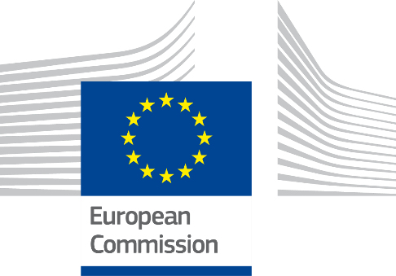
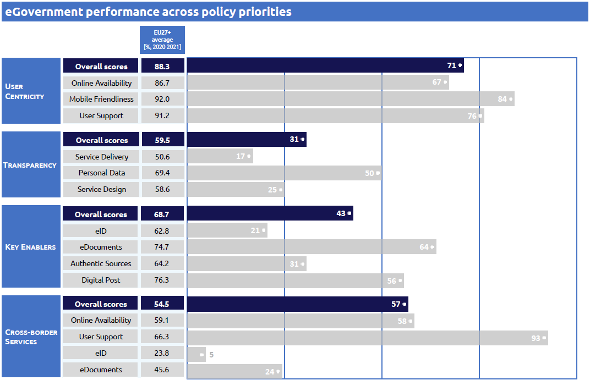

ISA2
[Grab your reader’s attention with a great quote from the document or use this space to emphasize a key point. To place this text box anywhere on the page, just drag it.]
Digital Public Administration factsheet 2022
Cyprus
ISA2
2 Digital Public Administration Highlights 10
3 Digital Public Administration Political Communications 12
4 Digital Public Administration Legislation 22
5 Digital Public Administration Governance 27
6 Digital Public Administration Infrastructure 31
7 Cross border Digital Public Administration Services for Citizens and Businesses 53
Country
Profile
1
The following graphs present data for the latest Generic Information Society Indicators for Cyprus compared to the EU average. Statistical indicators in this section reflect those of Eurostat at the time the Edition is being prepared.
Percentage of individuals using the internet for interacting with public authorities in Cyprus | Percentage of individuals using the internet for obtaining information from public authorities in Cyprus |
| |
Percentage of individuals using the internet for downloading official forms from public authorities in Cyprus | Percentage of individuals using the internet for sending filled forms to public authorities in Cyprus |
In 2017, the European Commission published the European Interoperability Framework (EIF) to give specific guidance on how to set up interoperable digital public services through a set of 47 recommendations. The picture below represents the three pillars of the EIF around which the EIF Monitoring Mechanism was built to evaluate the level of implementation of the EIF within the Member States. It is based on a set of 71 Key Performance Indicators (KPIs) clustered within the three main pillars of the EIF (Principles, Layers and Conceptual model), outlined below.
Source: European Interoperability Framework Monitoring Mechanism 2021
For each of the three pillars, a different scoreboard was created to breakdown the results into their main thematic areas (i.e. the 12 principles of interoperability, the interoperability layers and the components of the conceptual model). The thematic areas are evaluated on a scale from one to four, where one means a lower level of implementation and 4 means a higher level of implementation. The graphs below show the result of the second EIF Monitoring Mechanism data collection exercise for Cyprus in 2021.
Source: European Interoperability Framework Monitoring Mechanism 2021
Cyprus’ results in Scoreboard 1 show an overall good implementation of the EIF Principles, scoring above the European average for Principle 9 (Multilingualism) and 12 (Assessment of Effectiveness and Efficiency). However, areas of improvement are concentrated in Principle 3 (Transparency) and 10 (Administrative simplification) whose score of 3 goes below the EU average. More specifically, Cyprus should further ensure internal visibility and provide external interfaces for European public services (Recommendation 5) as well as put more emphasis on simplifying processes and using digital channels whenever appropriate for the delivery of European public services, to respond promptly and with high quality to users’ requests and reduce the administrative burden on public administrations, businesses, and citizens (Recommendation 17).
Source: European Interoperability Framework Monitoring Mechanism 2021
The Cypriot results for the implementation of interoperability layers assessed for Scoreboard 2 show an overall good performance with only scores of 4 in line with the European average, except for the recommendations related to the area of legal interoperability which achieved a score of 1. To further enhance Cyprus’ score in this area, the country should put in place ‘interoperability checks’ when it introduces new legislation in order to identify any barriers to interoperability. In addition, when drafting a new legislation, it should seek to make it consistent with relevant legislation, perform a ‘digital check’ and consider data protection requirements (Recommendation 27).
Source: European Interoperability Framework Monitoring Mechanism 2021
Cyprus’ scores assessing the Conceptual Model in Scoreboard 3 show an overall good performance in the implementation of all recommendations, aligned with the European average, except for the area related to the conceptual model itself. This is due to a lack of data for Recommendation 35, on the presence or not of a common scheme for the interconnection of service components and the necessary infrastructure for establishing and maintaining European public services. Some areas of improvement have also been identified. Cyprus should, for example, where useful and feasible to do so, further use external information sources and services while developing European public services (External information sources and services – Recommendation 45) as well as.use trust services according to the Regulation on eID and Trust Services as mechanisms that ensure secure and protected data exchange in public services (Security and Privacy – Recommendation 47).
Additional information on Cyprus’ results on the EIF Monitoring Mechanism is available online through interactive dashboards.
The graph below presents the main highlights of the latest eGovernment Benchmark Report, an assessment of eGovernment services in 36 countries: the 27 European Union Member States, as well as Iceland, Norway, Montenegro, the Republic of Serbia, Switzerland, Turkey, Albania and Macedonia (referred to as the EU27+).
The study evaluates online public services on four dimensions:
The 2022 report presents the biennial results, achieved over the past two years of measurement of all nine life events used to measure the above-mentioned key dimensions. More specifically, these life events are divided between seven ‘Citizen life events’ (Starting a small claim procedure, Moving, Owning a car, Health measured in 2021, and Career, Studying, Family life, measured in 2020) and two ‘Business life events’ (Regular Business Operations, measured in 2021, and Business start-up, measured in 2020).

Source: eGovernment Benchmark Report 2022 Country Factsheets
Digital Public Administration Highlights
2
Digital Public Administration Political Communications |
The “Digital Skills – National Action Plan 2021-2025” is a comprehensive and dynamic plan, stipulating a decisive step in the country’s digital transformation. The Action Plan has been crafted taking into consideration the latest developments in the field, considerably, among others, the goals of Europe’s Digital Decade specifically in the area of digital skills and in full alignment and in support of the “Path to the Digital Decade” Policy Programme. The total budget for the Plan, which is included in the National Recovery and Resilience Plan (RRP) amounts to over €24 million for the period 2021-2026.
In November 2021, the Department of Electronic Communications, Deputy Ministry of Research, Innovation and Digital Policy published the National Broadband Plan 2021 – 2025 which point out a roadmap for developing broadband infrastructure in the country, but also for the uptake of high-speed and ultra-high speed broadband services by citizens and businesses. The Broadband Plan includes a set of legislative, regulatory and support actions for the development of state-of-the-art broadband infrastructure.
| Digital Public Administration Legislation |
The Republic of Cyprus effectively transposed the European Directive 2018/1973/EU on establishing the European Electronic Communication Law into the national legislation in March 2022. The new legislation contributes to connectivity through VHC networks, faster time-to-market for spectrum resources and timely 5G deployment, alongside the take-up of ‘Internet of Things’ applications and innovative services. It ensures that connectivity for citizens and businesses is at affordable prices, through sustainable competition and universal service when needed. It also provides better protection for end-users, addressing new and emerging rights issues based on market developments.
Digital Public Administration Governance |
The Digital Security Authority (DSA) acts as the Single Point of Contact and the National Competent Authority (NCA) for implementing the NIS (Network and Information Security) Directive (EU) 2016/1148 in Cyprus, whilst also incorporating the National CSIRT (CSIRT-CY). It covers all of the sectors mentioned in the NIS Directive (energy, transport, banking, financial market infrastructures, drinking water, health, digital infrastructures), as well as many governmental services and the electronic communications sector.
Digital Public Administration Infrastructure |
Cyprus is developing a government e-Consultation Portal which aims to serve as a single space where all public consultations will be published. The platform will enable citizens to submit comments/suggestions to all open public consultations, follow certain consultations in real time, receive notifications and also access all comments submitted by citizens/organisations as well as the public bodies’ responses to them. The portal is expected to be serviceable for the public during the second quarter of 2022.

Digital Public Administration Political Communications
3
2020-2025 Digital Strategy for Cyprus
A new, holistic National Strategy has been completed and is at execution stage, the Ministerial Council and the Minister of Research, Innovation and Digital Policy (DMRID) being the competent executive body for its deployment. The strategy has a solid governance and KPI metrics to safeguard proper execution; 2021 is acknowledged as a pivotal year for enhanced digital fitness of the society, the entrepreneurial landscape and eGovernment transformation. The National Strategy for Digital Transformation includes the following pillars:
Digital Public Services
The Cypriot government has built a new delivery model for the development of end-to-end quality digital services, i.e. the Digital Services Factory (DSF) model, aiming to improve the quality of life for citizens and businesses by providing 100% of public services online. The provision of digital services to the public, in a user-friendly, efficient and effective way, will ultimately facilitate the interaction with public services, without the need for physical presence. The DSF will develop advanced digital services following an Agile/Scrum methodology, through redesigning and reengineering of procedures, and following a citizen journey that provides adaptability, response to change and is based on user experience.
In this context, a framework agreement with the Government Digital Service (GDS) of the United Kingdom (UK) has been signed for the establishment of this new delivery model based on the UK example gov.uk.
Within the scope of the project, a DSF Multidisciplinary Team has been established in the DMRID. It works closely with GDS, aiming to deliver all the required prerequisites that would allow for the efficient provision of high-quality and user-friendly digital services to the public.
The plan is to achieve the provision of all public services online according to the standards and methodologies of the DSF. The target is to have the majority of public services online until 2026.
Digital Skills Strategy
The National eSkills Action Plan was drafted by the DMRID and was finalised after consultation with the main stakeholders involved, namely the Ministries of Labour, Welfare and Social Insurance; Finance (Cyprus Academy of Public Administration); Education, Culture, Youth and Sports, and the Human Resource Development Authority. It was adopted by the Council of Ministers during the meeting held on 13 December 2021 and is now under deployment.
The Digital Skills – National Action Plan 2021-2025 is a comprehensive and dynamic plan, marking a decisive step in the country’s digital transformation. The Action Plan has been crafted taking into consideration the latest developments in the field, including, among others, the goals of the Europe’s Digital Decade, specifically in the area of digital skills, and in full alignment with the ‘Path to the Digital Decade’ Policy Programme. The total budget for the Plan, which is included in the National Recovery and Resilience Plan (RRP) amounts to over EUR 24 million for the period 2021–2026.
The purpose of the plan is to strengthen the digital fitness and capacity of citizens across the whole spectrum of demographics, social structure and economic activity. Digital skills are an essential prerequisite for learning, working and actively participating in a sustainable and competitive economy and in an open and inclusive society. Emphasis is given on actions related to meeting the growing needs of the labour market – both in regard to broad-based digital skills and ICT specialists – but also on redesigning the education system to better use digital tools in teaching and learning processes, cultivate the skills of the future and promote the STEM (Science, Technology, Engineering, Mathematics) career path.
Equity Fund
On 21 August 2019, the Council of Ministers decided the establishment of a public funded Equity Fund (thereafter called the ‘Fund’) in Cyprus, in the form of a regulated alternative investment fund. The State will initially provide EUR 20 million capital to the Fund with the possibility of attracting private co-investors, either at the level of the Fund or at the level of each investment separately. The purpose of the Fund is to offer alternative financing opportunities to the private sector: SMEs, start-ups, technology and innovation companies etc., thus boosting the competitiveness of Cypriot enterprises and enhancing growth and development.
Memorandum of Understanding in the Area of eGovernment between the Republic of Cyprus and Estonia
Major steps towards the implementation of eGovernment were taken with the signing of the Memorandum of Understanding and Cooperation in the Areas of eGovernment and ICT. The memorandum was signed by the President of the Republic Nikos Anastasiadis and the Estonian Prime Minister, Taaivi Roivas. The memorandum’s main objective is to develop cooperation in the areas of eGovernment and ICT, with a view to aiding Cyprus’ efforts to digitalise governance and public administration. Cooperation will focus on defining a strategic agenda along with the design and implementation of concrete actions, in order to develop the environment that will enable citizens to better access public sector information and services. The National eID project was one of the flagship projects where the expertise and experience of the Estonian government have been used.
Furthermore, the President of the Republic plans to sign an amended Memorandum of Understanding with the Estonian Prime Minister, during his visit in April 2022, where new areas of collaboration in the eGovernment sector will be defined.
Public Administration Reform (PAR)
The Public Administration Reform (PAR) is considered a very important structural change aiming to create flexible, modern and productive public services for the benefit of both citizens and businesses. The PAR aims to solve horizontal and sectoral issues. In relation to the horizontal/cross-cutting issues, the reform of human resource management (HRM) across the public sector is planned.
More specifically, the government drafted and submitted to the House of Representatives legislative proposals which were approved in January 2022. The new legislation introduces in the public service a new system of appraisal and selection of candidates for filling the promotion posts in the public service from the year 2024 onwards, with different criteria and weights for each category of posts. The legislative changes aim to ensure the selection of the most suitable candidates and the most efficient implementation of the principles of objectivity and merit. It also introduces a new performance appraisal system for the performance appraisal of the employees based on specific criteria and a detailed framework of competencies/skills, according to their hierarchical level, starting from the annual evaluation for the year 2023.
Action Plan on Better Regulation
The third and final progress report for the Action Plan on Better Regulation that covered the period from 2015 to 2018 was submitted to the Ministerial Council in late 2019. This was followed by the formulation of the new Action Plan on Better Regulation, which covers the period 2019–2022.
The new action plan was approved by the Council of Ministers on 6 November 2019. The plan consists of three priority axes:
The IA mechanism, put in place in 2017 to undertake more focused and thorough IAs for new legislation, was embedded and is now a mandatory part of the legal drafting procedure. An IA report summarising the main findings and suggestions for the way forward was published in 2018. Its intention was to continue the training programme of government officials and further enhance the implementation of the new IA framework.
Further to the above three axes, the action plan also included actions that are being promoted under the pillar of eGovernment, which go hand in hand with the other Better Regulation initiatives.
Operational Programme ‘Competitiveness and Sustainable Development’
The promotion of ICT use is one of the seven priority axes of the 2014–2020 OP ‘Competitiveness and Sustainable Development’. The budget of the axis is around EUR 40 million (6% of the OP’s total budget), which is co-financed by the European Regional and Development Fund (ERDF) with EUR 33.5 million. Around 85% of this budget was allocated to strengthening ICT applications for eGovernment, eLearning and eHealth.
A new ‘THALIA 2021-2027’ programme has been submitted to the European Commission for approval. The new programme aims to utilise the funds allocated to Cyprus from the EU Cohesion Policy for the programming period 2021–2027. A total budget of about EUR 85 million (5,5% of the programme’s total budget) has been allocated to the Specific Objective 1(ii) “Harnessing the benefits of digitalization for citizens, business, research organizations and public authorities”. These funds will be used to support actions in both public and private sectors which will enable and accelerate Cyprus’ digital transformation.
Recovery and Resilience Facility
The Recovery and Resilience Facility (thereafter called the Facility) is the centrepiece of ‘Next Generation EU’, a temporary recovery instrument that allows the Commission to raise funds to help repair the immediate economic and social damage brought about by the coronavirus pandemic. The Facility is also closely aligned with the Commission’s priorities, ensuring a long-term sustainable and inclusive recovery that promotes the green and digital transitions. The Facility will provide EUR 672.5 billion in loans and grants available to support reforms and investments undertaken by the Member States.
Within this context, the Deputy Ministry of Research, Innovation and Digital Policy of Cyprus has submitted a comprehensive plan for reforms and investments in digital transformation areas, to be included in the national plan, amounting to a total of EUR 136 million. Proposals in the areas of research and innovation have also been included.
The proposed projects fall under the following policy domains and specific strategic portfolios, which are perfectly aligned with the 2020-2025 Digital Strategy:
1. Upgrade Infrastructure for Connectivity (EUR 53 million) - the Digital infrastructure Portfolio:
Ensuring 5G and fibre coverage for 100% of the population living in organised communities, including deployment of 5G along the main terrestrial corridors, and enabling universal and affordable access to Gigabit connectivity in all urban and rural areas, in line with the EU 2025 Gigabit connectivity objectives.
2. Promote eGovernment (EUR 46 million) - the Digital Government Portfolio:
eGovernment projects are developed through a 2-tier approach, more specifically through the rapid deployment of small-scale digital solutions (microservices) and the parallel long-term implementation of mega eGovernment projects. There is a holistic approach encompassing all governmental authorities.
3. Smart Cities (EUR 35 million) - the Digital infrastructure Portfolio:
The DMRID has been appointed to take the leading and coordinating role in developing a nation-wide strategy on Smart Cities, orchestrating, through a well-crafted plan, the Smart-cities framework, as well as all supporting initiatives and smart-cities building blocks.
4. Digital Skills (EUR 1.85 million) – the Digital Society Portfolio:
This initiative has been specifically designed and formulated for the enhancement of digital skills across all population groups (public administration, enterprises and society at large) as well as the promotion of science, technology, engineering and mathematics (STEM) education and professional paths, so as to effectively address the market shortage in ICT professionals.
All of the above projects and initiatives are aligned with the National Digital Strategy, and their implementation will accelerate Cyprus digital transformation and improve its position in the DESI index, moving closer to the EU average.
No political communication has been adopted in this field to date.
No political communication has been adopted in this field to date.
National Scheme
The government has introduced the national eID scheme according to the eIDAS, aiming to the High Assurance Level. The scheme includes a series of legislative acts which have been voted by the Parliament in April 2021. According to this legislation, Trust Service Providers (TSP) authorized by the Cypriot government will be able to provide eID (eIdentification of High Assurance Level and qualified eSignature) to the citizens above 18 years old. By law, the TSP must use a remote server solution using PKI infrastructure (the private keys are kept in an HSM server in the TSP premises). One TSP is already in the process of being authorised by the government and it will start providing eID to Cypriot citizens during the year. Citizens will be able to use eID to access the public eServices through the ‘Cy login’ mechanism.
Cybersecurity Strategy
The updated National Cybersecurity Strategy of the Republic of Cyprus was published in December 2020. It includes a number of thematic areas (25 actions) through a holistic approach and covering all phases of cybersecurity (identify, protect, detect, respond, recover, improve). The document names specific targets for each of the thematic areas included, and specific Project Plans have been developed for each action, with many of the actions already being implemented. The timeline under consideration for the implementation of the totality of the actions, and for a new update to the strategy, is until the end of 2024. The strategy is a self-standing initiative, although it has taken heavily into account the current version of the national Digital Agenda. The budget that has been made available for the implementation of the strategy is currently around EUR 6.5 million for 2022, although the Steering Committee of the strategy is following a dynamic approach, and has the ability to request additional budget each year depending on the needs identified (i.e. further budget will be identified and allocated for 2023 and 2024).
No political communication has been adopted in this field to date.
No political communication has been adopted in this field to date.
eGovernment in Education
In June 2018, the Ministry of Education, Culture, Sport and Youth officially launched a programme on the design and implementation of eGovernment in Cyprus’ education.
One of the main objectives was the implementation of the School Management System (SMS) project, a computerised system intended to standardise and accelerate bureaucratic processes. The SMS is a crucial element of the restructuring plan of the Ministry of Education, Culture, Sport and Youth, which aims to create an advanced computerised system that will ensure proper information management and process automation. The SMS will contribute to the streamlining of bureaucracy, the reduction of high administrative costs and it will ensure the prompt provision of information, cooperation and support of various stakeholders. The different services offered by the SMS will be gradually introduced until the expected ending date of the project in 2023. The total cost for the implementation of the system is around EUR 10 million, which will be co-financed by both national resources and the ERDF 2021–2027.
In support to this project, a number of tablets were delivered to all upper secondary schools in 2020, in order to prepare, empower and develop the digital skills of the educators for the application of the SMS.
National Coalition for Digital Jobs
Cyprus has drafted a holistic action plan aimed at the enhancement of digital skills across all population groups (public administration, enterprises and society at large), as well as the promotion of STEM education and professional paths, so as to effectively address the market shortage in ICT professionals. The goal is to deliver an open, accessible and inclusive digital society, able to actively participate in socioeconomic activities, fully reap the benefits of digital transformation and act as a driver for an accelerated digital transition. It includes actions aimed at the integration of digital skills in the educational system and the alignment of educational curricula with industry needs, the upskilling and reskilling of both the public and the private sectors, and the promotion of a culture of life-long learning and innovation.
In addition, Cyprus is developing a dynamic, easy-to-use and accessible eLearning platform, containing a self-assessment tool for digital fitness, an index of all available skilling programmes, and content material on digital skills and cross-sectoral competences such as project management.
Reform of the Justice System (eJustice)
The reform anticipates qualitative changes to the justice system with the goal of strengthening the flexibility, effectiveness, and speed of the decision-making process. As part of the reform, an electronic court administration system will be introduced to digitalise the operations of the different courts. To this end, a tender to purchase a license for a web-based court administration system (eJustice system), including training of personnel, and the option to acquire the system by the government, was launched. The eJustice system will be installed in the premises of every court in Cyprus, and it will be possible to manage all procedures of a legal case. Additionally, the eJustice system will provide electronic services to court personnel, law offices, police, governmental departments, private law companies, lawyers, the bar association, private companies, citizens and private service provides (e.g. audit firms, land development companies, certifying officers etc.).
The implementation phase is expected to be completed by June 2022, followed by 6-month pilot phase. On successful completion of the pilot phase, an SLA agreement will be activated, and the system will be deployed for production. The production phase will last 6 years and the government will pay a monthly fee as a license to use. This monthly fee will also cover the helpdesk, maintenance and small-scale changes/ improvements of the system. The government has the right to extend the production phase for an additional 4 years or to purchase the system.
National Strategy on Artificial Intelligence
Τhe Council of Ministers in Cyprus approved the National Strategy for Artificial Intelligence (AI) in January 2020. The strategy is based on four key pillars set by the European Commission, namely to maximise investment through partnerships, to create national databases, to nurture talents and lifelong learning, and to develop ethical and trustworthy AI.
In May 2021, an updated national strategy was introduced, and a specific action plan was prepared, with a timeframe of implementation until 2026.
National Strategy on Decentralised Technologies and Blockchain
The National Strategy on Decentralised Technologies and Blockchain was approved on 18 June 2019 by the Council of Ministers in Cyprus. The national strategy focuses on three priorities:
Priority 1: The ‘Bill on the Distributed Ledger Technology Law of 2021’ has been prepared and it is currently under legal vetting by the Attorney General’s Office. It mainly aims to enhance legal certainty for cryptoassets status as property.
Priority 2: In December 2019 a Request for Interest (RFI) was announced, to consolidate the interest from the market and identify the most promising domains for which the Republic of Cyprus stands to attain the greatest benefits, if it incorporates blockchain technology. Based on the domains already identified by a previous Request for Interest, a national blockchain Proof of Concept call for proposals is now under preparation.
Priority 3: An Innovation Hub was launched by the Cyprus Securities and Exchange Commission (CySEC) in 2018. The evolution of the Innovation Hub to a Regulatory Sandbox is now envisaged, and a relevant project has been included in the Cyprus Resilience and Recovery Plan.
European Blockchain Partnership and MED 7 Cooperation
Cyprus, together with 25 other Member States, signed the Declaration for Cooperation on a European Blockchain Partnership (EBP). In Cyprus, an ad-hoc working group was established (approved by the Council of Ministers on 30 August 2018) with the mandate to evaluate the environment and the possible risks. The ad-hoc working group will also define a national plan for the development of blockchain technology in Cyprus. The plan, which will be submitted to the Council of Ministers for approval, will include pilot projects, legislative initiatives and a strategy for the adoption of blockchain.
No political communication has been adopted in this field to date.
G-Cloud
Cyprus aims to create a unified cloud environment that will provide Cloud Computing capabilities for the government by hosting Governmental Systems and Services. The G-Cloud will be implemented in the premises of a datacentre provider (Tier3 datacentre) and not in government premises. Initially, the G-Cloud will be used by a limited number of Departments and Ministries of the government, but it will be continuously improved and extended in order to cover most of the existing Systems or other upcoming needs. In parallel, the G-cloud will be expanded to become a hybrid cloud, allowing the use of public cloud resources when suitable. The project is at the initial phase and it is getting prepared for the procurement phase. The estimated date for the completion of the implementation is foreseen at the end of 2025.
No political communication has been adopted in this field to date.
No political communication has been adopted in this field to date.
Cyprus National Broadband Plan 2021-2025
Broadband coverage has generally been improving across Cyprus and has met the 2020 target for ubiquitous 30 Mbps coverage, but not all EU targets for 2020 were achieved. Suburban and rural areas, where there are less incentives for the private sector to invest in ultrafast broadband provision, remain uncovered in comparison with urban areas, and ultrafast take-up is significantly behind target. It is obvious that a digital divide persists in Cyprus, even though some progress has been made in the last few years.
The Department of Electronic Communications of the DMRID announced the Broadband Plan of Cyprus 2021-2025 in November 2021. The new Broadband Plan focuses on expanding ultra-high-speed networks coverage and demand by using EU funding and other State aid resources. It is a roadmap that aims to strengthen and develop new infrastructure, technologies and connectivity services. The plan includes a set of interventions at legislative and regulatory level, but also actions of practical support for the development of broadband infrastructure, and sets the following connectivity targets, to be achieved by 2025:

Digital Public Administration Legislation
4
No legislation has been adopted in this field to date.
No legislation has been adopted in this field to date.
Access to Public Information (Access Rights Act)
In December 2017, the Law providing for the right of Access to Public Sector Information (Law 184(Ι)/2017) was adopted and entered into force in 2020, for the purpose of enhancing transparency within the public sector. The law provided citizens with the right to request and receive information, under certain conditions, from public authorities. Furthermore, the law created an obligation for public authorities to publish certain information on their websites to avoid submitting a request form to access this information. The Commissioner for Personal Data Protection was appointed as the supervisory authority for this law and will act as Information Commissioner.
Law Establishing Rules Governing the Re-use of Existing Information Held by Public Sector Bodies
A new Open Data and Public Service Information Re-Use Law, Law 143(I)/2021 was enacted in November 2021. The new legislation replaces Law 205(I)/2015 and transposes the provisions of the new Directive 2019/1024. The operation of the open data portal as a data repository is part of the effort to make public sector information available and exploitable without legal or technical constraints. The portal provides relevant metadata along with information regarding charges and licenses and is currently hosting around 1 200 datasets.
Accessibility of the Websites and Mobile Applications of Public Sector Bodies
Cyprus harmonised Cypriot legislation with Directive (EU) 2016/2102 of the European Parliament and of the Council of 26 October 2016 on the accessibility of the websites and mobile applications of public sector bodies. The legislation proposal was submitted to the House of Representatives towards the end of September 2018. The Law Νo. 50(Ι)/2019 was approved and published on the Official Gazette of the Republic of Cyprus on 5 April 2019.
Legal Framework for Electronic Signatures and Associated Matters
By decision of the Council of Ministers, in March 2018 the Department of Electronic Communications (DEC) was assigned the legal framework on electronic signatures.
On 1 July 2016, Regulation (EU) No 910/2014 came into effect. It replaced the previous Directive 1999/93/EC on electronic signatures. It introduced new regulatory procedures for a number of new trust services such as electronic seals, electronic time stamps, electronic registered delivery services etc. To this end, the DEC harmonised the legislation on electronic identification and trust services for electronic transactions in the internal market with the above Regulations. Also, this legislation set DEC as the competent authority for the implementation of Regulation (EU) No 910/2014, as the supervisory body under Article 17 of the Regulation, and as the body responsible for keeping the national trusted list (Article 22 of Regulation).
Furthermore, in order to adopt the National eID Scheme, amendments were made on the Population Register Law and on the above-mentioned DEC legislation (amendments on the relevant law and introduction of a new regulation describing the process and the procedures for the authorization of an eID provider). The legislations were voted by the Parliament in April 2021.
Law Providing for the Protection of Natural Persons with Regard to the Processing of Personal Data and for the Free Movement of Such Data
The Law Providing for the Protection of Natural Persons with Regard to the Processing of Personal Data and for the Free Movement of Such Data of 2018 (Law 125(I)/2018), entered into force in July 2018 for the purpose of compliance with Regulation (EU) 2016/679 (GDPR) on the protection of natural persons with regard to the processing of personal data and on the free movement of such data, and repealing Directive 95/46/EC.
Filling Systems for Public Authorities or Bodies
Section 10 of Law 125(I)/2018 regulates the combination of filing systems among public authorities or bodies. It provides that the combination of large-scale filing systems of two or more public authorities or bodies is permitted only for reasons of public interest and provided that the provisions of Article 6 paragraph (1), points (c) or (e) or Article 9 paragraph 2 points (g), (h) or (i) of the GDPR are fulfilled.
In the cases where the combination relates to special categories of personal data or to personal data relating to criminal convictions and offences or where it is to be carried out with the use of the identity card number or any other identifier of general application, a data protection IA is required, and the Commissioner for Personal Data Protection shall be previously consulted.
The IA referred to in subsection (2) shall be carried out jointly by the public authorities or bodies that intend to combine their filing systems and shall contain the information provided for in Article 35 paragraph (7) of the GDPR and, where applicable, a description of the technical and organizational security measures provided for in GDPR Articles 24, 25, 28 and 32.
The Commissioner can authorize the combination of the filing systems referred to in this section and impose terms and conditions for the materialization of the combination to the public authorities or bodies that intend to combine their filing systems.
Legal Framework Governing Public Procurement
The EU Public Procurement Directives of 2014, which included provisions related to rendering the electronic submission of tenders mandatory, were transposed in national legislation by Laws No. 73(I)/2016, 140(I)/2016 and 11(I)/2017, concerning the coordination of procedures for the award of public works contracts, public supply contracts and public service contracts. Prior to the implementation of the eProcurement system and based on the provisions of the law, supplementary eProcurement regulations were issued.
eInvoicing
The Republic of Cyprus effectively transposed the European Directive 2014/55/EU on electronic invoicing in public procurement into the national Law 89(I)/2019 in April 2019. eInvoices in B2G public procurement are used on a voluntary basis by suppliers. From the 18 April 2019, the receiving and processing of compliant eInvoices is mandatory for central public sector bodies. Sub-central entities are mandated to receive and process compliant eInvoices from the 18 April 2020 on. At sub-central level, the eInvoicing model in place is a Peppol-based strategy, which is fully operational since the 18 April 2020.
As of Spring 2021, eInvoices from non-domestic suppliers are accepted. The main identified benefits of the implementation of eInvoicing at the sub-central level are cost and operational savings and the contribution to process automation. Sub-central government automation has reached a high level in most of the contracting authorities and entities.
The Deputy Ministry of Research, Innovation and Digital Policy, as the responsible entity for the implementation of eInvoicing in Cyprus, is proceeding with the necessary changes in the existing legislation for the mandatory implementation of eInvoicing for B2G transactions as of the year 2022.
Law on Certain Legal Aspects of Information Society Services, in Particular Electronic Commerce and Associated Matters and its Amendment
Law 156(I)/2004, the Electronic Commerce Law, serves the implementation of Directive 2000/31/EC of the European Parliament and of the Council of 8 June 2000 on certain legal aspects of information society services, in particular electronic commerce in the internal market. The law aims to ensure the free movement of information society services between the Republic of Cyprus and other Member States of the European Union, relating to the establishment of service providers, commercial communications and the conclusion of electronic contracts. Services covered by the law include online information services, online advertising and online selling of products and services, among other services.
Law on Electronic Money
The Law on Electronic Money 81(I)/2012 regulates the rights to issue electronic money directly from the Cypriot Republic and defines the authorities designated to issue money. Furthermore, it regulates the authorisation and supervision of institutions related to the issuance of electronic money.
The eHealth programme is intended to align the Cypriot health infrastructure with the standards set by the European Union to set up the necessary infrastructure for the exchange of health data across national borders within the EU and for the provision of interoperable eHealth services. The eHealth Law No. 59 (I)/2019, as well as the funding received by the Connecting Europe Facility (CEF) programme, focus on supporting Cyprus’ efforts to be part of this secure peer-to-peer network allowing the exchange of Patient Summaries (PS) and ePrescriptions (eP).
On a national level, the key point is the creation of a Central Citizen Data Warehouse, which uniquely links every citizen to the Central eGovernment Portal, the country’s cloud-based electronic health record system (EHR). It would not be difficult to accommodate into this system any non-Cypriot citizens who choose to obtain a user account and store their data on Cyprus’ cloud upon payment of an annual fee. This facility will not entitle non-Cypriots to health insurance coverage, but it will simply facilitate them with an interoperable EHR.
No legislation has been adopted in this field to date.
DLT/Blockchain Bill
The DLT/Blockchain umbrella bill is currently under finalisation based on the feedback received after the public consultation. Additionally, the Tax Department is preparing a Circular containing guidelines on the fiscal treatment of cryptoassets.
No legislation has been adopted in this field to date.
No legislation has been adopted in this field to date.
No legislation has been adopted in this field to date.
No legislation has been adopted in this field to date.
European Electronic Communication Law
The Republic of Cyprus effectively transposed the European Directive 2018/1973/EU on establishing the European Electronic Communication Law into the national legislation in March 2022. The new legislation contributes to connectivity through VHC networks, faster time-to-market for spectrum resources and timely 5G deployment, alongside the take-up of ‘Internet of Things’ applications and innovative services. It ensures that connectivity for citizens and businesses is provided at affordable prices, thanks to sustainable competition and a universal service, if needed. It also provides better protection for end-users, addressing new and emerging rights issues based on market developments.

Digital Public Administration Governance
5
For more details on Cyprus’ responsible bodies for digital policy and interoperability, its main actors, as well as relevant digital initiatives, please visit the NIFO collection on Joinup.
Deputy Ministry of Research, Innovation and Digital Policy
The Cyprus government decided to create a Deputy Ministry with the task to centrally coordinate all responsibilities concerning research, innovation and digital policy. The Deputy Ministry has been operational since 1 March 2020. The mandate of the DMRID policy is, inter alia, to lead Cyprus into the digital era through the promotion of scientific excellence, the support and facilitation of innovative entrepreneurship, and the implementation of a digital transformation programme aimed at developing a modern and efficient State and a dynamic digital economy where every citizen and every business will be able to grow and prosper. The DMRID will also have the ability to seek sufficient and clearly ring-fenced budgets to implement the broader digitalisation strategy.
Τhe two government departments that were transferred to the Deputy Ministry are the Department of Electronic Communications (DEC), which was previously under the Ministry of Transport, Communications and Works, and the Department of Information Technology Services (DITS), which was previously under the Ministry of Finance.
Department of Information Technology Services
The Department of Information Technology Services is the government body that coordinates the promotion and application of Information Technology and eGovernment in the public sector. The mission of the Department is to plan, develop, implement, manage and maintain the ICT systems.
Department of Electronic Communications
On 1 July 2016, Regulation (EU) No. 910/2014 came into force. It replaced the previous Directive 1999/93/EC on electronic signatures. It also introduced new regulatory procedures for a number of new trust services e.g. electronic seals, electronic time stamps, electronic registered delivery services etc. To this end, the Department of Electronic Communications (DEC) prepared a new article of legislation that adopted all new provisions under the above Regulation. Also, this legislation established the DEC as the competent authority for the implementation of Regulation (EU) No. 910/2014, as the supervisory body under (Article 17 of the Regulation) and the body responsible for keeping the national trusted list (Article 22 of Regulation).
Press Information Office
The Press Information Office (PIO) is an executive member of the National Committee on the Digitisation of Cultural Heritage, created in 2017 by a decision of the Council of Ministers. Its main objective is to fully develop and exploit all available resources with the aim of digitalising Cyprus’ cultural heritage.
Department of Public Administration and Personnel, Ministry of Finance
The Department of Public Administration and Personnel (PAPD) is in charge of the public administration reform, human resource management policies, training of public sector employees and upgrading their IT skills. It is responsible for the promotion of organisational changes and new processes in public administration to enable a successful implementation of eGovernment. The PAPD is also the body responsible for the implementation of the Open Data and Public Sector Information (PSI) Directive in Cyprus and of the Human Resource Management Module of ERP in the public sector.
Office of the Commissioner for Personal Data Protection
The Commissioner for Personal Data Protection is an independent supervisory authority who monitors the application of the Data Protection Law and advises organisations in the private and the public sector in their implementation of this law. The Law provides, inter alia, for the protection of personal information against any unauthorised and illegal collection, recording and against the further use of that information for unlawful purposes. It also grants the individual certain rights, such as the right of information and the right of access to it. The office also receives and examines complaints in relation to the application of the law.
Commissioner of Communications
The Commissioner of Communications is an independent official, appointed by the President of the Republic of Cyprus, and it is the political supervisor of the Office of the Commissioner for Electronic Communications and Postal Regulation (OCECPR) and the Digital Security Authority (DSA). The OCECPR has the mandate to act as the independent electronic communications regulator, focusing mainly on ex-ante regulation. Within this mandate, the OCECPR is responsible for promoting consumers’ interests in terms of prices and choice availability, as well as the promotion of innovation through the development of efficient competition.
Digital Security Authority
The Digital Security Authority (DSA) acts as the Single Point of Contact and the National Competent Authority (NCA) for implementing the NIS (Network and Information Security) Directive (EU) 2016/1148 in Cyprus, whilst also incorporating the National CSIRT (CSIRT-CY). It covers all of the sectors mentioned in the NIS Directive (energy, transport, banking, financial market infrastructures, drinking water, health, digital infrastructures), as well as many governmental services and the electronic communications sector.
Union of Cyprus Municipalities
The structure of the Cypriot State is highly centralised, consisting of the central government, six districts and a number of municipalities and community councils. The Union of Cyprus’ Municipalities was established in 1981. Even though membership is voluntary, at present all municipalities (39), accounting for approximately 71% of the population of Cyprus, are represented. The Union’s main functions are to contribute to the development of local government autonomy, and to act as spokesman for local government interests vis-à-vis the central government and other national institutions.
Among other responsibilities, the Union took the initiative to design and implement eGovernment at the local authority level. The project is currently under implementation and it is included in the list of projects that the Council of Ministers had initially approved to funded using the Cohesion Policy Funds in the programming period ESIF 2021–2027 (with Decision 90.684 of 13 January 2021).
For this project, called ‘Evagoras”, the Union focused on designing and implementing an efficient and flexible IT cloud infrastructure and application architecture to be utilised by Municipalities to enhance process automation, information management and utilisation, but also to provide channels for publishing and optimising the delivery of a full range of electronic services to citizens. The project started on 1 January 2021 and is expected to be completed by August 2023.
Union of Cyprus Communities
The Union of Cyprus Communities was established in 1992. The Union is set up to protect and promote its members’ powers, interests, rights and privileges and, generally, the independence and self-sufficiency of Communities. Its aims, thanks to the cooperation and exchange of views between members, are the following: (i) achieve common goals; (ii) collect useful data for members; (iii) lobby other government and non-government agencies; (iv) assist in securing the powers and resources needed for the development and expansion of local self-government, and (v) to participate in international bodies of local self-government and in local and international conferences. There are 349 Community Councils in the areas under the effective control of the government, which cover approximately 85% of the island’s total land area. In addition, there are 137 Community Councils in the areas in which the Government does not exercise effective control.
The Union of Cyprus Communities does not, at this stage, have any on-going projects for the implementation of eGovernment in Community Councils. It is expected that, with the forthcoming reform of the local government, the design and implementation of infrastructure for the provision of all eServices to citizens will be promoted.

Digital Public Administration Infrastructure
6
Gov.cy
A new Gov.cy portal is currently under development. The new frontend will be more modern and will promote a unified online identity and presence of the Cypriot government; in addition, it will provide better digital services to citizens and businesses. It will be a modern, user-friendly, dynamic and responsive web page where the public will have access to all the digital services provided by the government of Cyprus and also to the other portals that provide digital services. It is expected to go live by June 2022. This new portal will be integrated with Ariadni so as to fully benefit from the current functionalities and mechanisms. It will be the single point of communication between the public and the Cypriot government, in order to serve citizens through a more user-centric approach. The project will be co-financed by the ERDF 2021–2027.
Point of Single Contact of Cyprus
The Point of Single Contact (PSC) provides services to businesses and entrepreneurs, whether in Cyprus or in other EU Member States, interested in pursuing their business aspirations in Cyprus. The portal was set up in accordance with the EU Services Directive and provides comprehensive information relating to the procedures and formalities required for the access to and exercise of regulated service activities and professions in the country, online submission of application forms, and tracking the progress of applications submitted.
Government Secure Gateway (Ariadni)
The Government Gateway, Ariadni, provides the foundation for the delivery of the vision for a joined-up government and will ultimately constitute the central passage to all electronic transactions between citizens, businesses, institutions and the government. In terms of functionality, it incorporates a unified registration and authentication service, allowing users (citizens, businesses, institutions, etc.) to conduct their transactions with the relevant government organisations over the internet in a secure manner, with a single set of credentials, using any application, any device, anytime, anywhere. Additionally, Ariadni provides interoperable, secure and authenticated web-based interconnection of back-end systems. The project has been classified as one of the most important infrastructure projects for the successful implementation of eGovernment. Common core services provided through Ariadni include:
Reform of the Government Presence
A strategic study for the reform of the government’s web presence on the Internet was carried out in collaboration with the Structural Reform Support Service of the European Commission (SRSS) and concluded in 2019. As a result, a new project is underway for the reform of the way in which the government validates and publishes information on the Internet through websites. The aim is to improve efficiency and productivity in all areas, enabling faster and easier development, hosting and publishing, as well as to provide a more user-friendly environment for the employees of government organizations who are in charge of the administration of their websites (upload information/update content). It will be a continuation of the GovCy portal as a Single Point of Access to all Government websites. More specifically, it will:
The project is expected to start in May 2022 and complete gradually over a period of 18 month.
Cyprus Government Open Data Portal
In 2018, Cyprus revamped the National Web Portal for Open Data. It was developed by the Public Administration and Personnel Department in collaboration with the Open University of Cyprus and is based on the DKAN open-source platform. The portal offers several novelties such as: a larger catalogue of public datasets (geographical, demographic, statistical, environmental data, etc.), an editorial section related to open data, a wide variety of support material for open data publishers and re-users in the form of visual guides, a section to promote apps developed through the use of open data, and online forms for submitting data requests and apps developed with the use of open data. In addition, the portal’s functionalities include an interface to generate and share data visualisation tools (grids, graphs, maps), as well as a collection of user-friendly APIs to access both data and metadata. The National Web Portal for Open Data was ranked 11th among the open data portals of the 27 EU member States in the Open Data Maturity Report 2021.
Enterprise Resource Planning System
In November 2018, a contract was signed between the Republic of Cyprus and Unit 4 Business Software Ltd, for the implementation, maintenance and operation of an Enterprise Resource Planning System (ERP), which will provide functionality for accounting, budgeting, and managing human resources, payroll and pensions. The contract cost, including all optional elements, amounts to EUR 34 million. The implementation plan is divided in two phases:
The new ERP system is expected to allow for the extensive redesign of procedures and the elimination of a great many of manual tasks and to automate procedures for approving Expenditure, Invoicing, Budgeting and Human Recourses and Payroll. The system will interface many components of the Public Service systems with the ones of banks and suppliers. The systems will also allow for better planning, training and allocation of Human Resources. Human Resources information is expected to be easier to share and to be of better timing and quality. The project could be co-financed by the ERDF 2021–2027.
Department of Lands and Surveys Portal
The Department of Lands and Surveys (DLS) portal consists of four main pillars:
The DLS portal has become the main platform for all property-related eServices in Cyprus. The Department of Lands and Surveys (DLS) Portal was awarded the 2018 Innovation Award which now hosts nearly 30 eApplications for citizens, companies, specific interest groups, local authorities, mortgagees and other types of organisations.
Cyprus e-Consultation Portal
Cyprus is developing a government e-Consultation Portal which aims to serve as a single space where all public consultations will be published. The platform will enable citizens to submit comments/suggestions to all open public consultations, follow certain consultations in real time, receive notifications and also access all comments submitted by citizens/organisations as well as the public bodies’ responses to them. The portal is expected to be serviceable for the public during the second quarter of 2022.
Ipodamos – Town Planning and Housing Department’s Integrated Information System
Cyprus is developing an integrated information system called Ipodamos for the Town Planning and Housing Department that covers the IT needs and demands of the Department, as well as the management of building permits from the District Administration Offices. The System is expected to be a powerful tool for the upgrading of the services offered by the Department, aiming at accelerating the bureaucratic procedures as well as the average response time to citizens’ requests. The system is expected to be up and running in 2022. The project is co-financed by the ERDF 2014–2020. Furthermore, the upgrade of the system, allowing for the acceptance of applications for planning and building permits by all Planning and Building Authorities will be financed by the Recovery and Resilience Facility of Cyprus.
Grow Digital Portal
Grow Digital CY is a national coalition for digital skills and jobs. It has been set up with the purpose of addressing the current shortage and mismatch in digital skills and ICT-related jobs in Cyprus.
Citizens Service Centres
The Citizens Service Centres (KEPs and KEPOs) operated by the Department of Public Administration and Personnel (PAPD) and the Department of Postal Services (DPS), respectively, are the first one-stop shop for citizens in Cyprus. They have been set up to provide a variety of public services from a single point of contact. The main goal is to provide faster and better services to citizens.
The KEPs are located in 9 different locations all over Cyprus. In 2021, a Queue Management Information System was installed in all KEPs and KEPOs. The Queue Management Information System assists in managing citizens’ flow and waiting time, enhancing citizens’ experience and improving service quality. It also provides real-time, valuable data/metrics and historical data/ etrics to the following entities:
(a) Supervisors of KEPs and KEPOs, in view of monitoring waiting times and service flow and obtaining a better perception of the performance and operation of the Centres;
(b) PAPD and DPS, with the aim of assisting in understanding trends, obtaining citizens’ feedback and storing performance insights, thus making necessary decisions for optimizing service processes and for further overall improvements.
Furthermore, a new booking platform, operated via website and mobile application, will be developed and implemented. The platform will enable citizens to schedule an appointment for the specific office and services required, therefore making the best use of their valuable time. The platform will have the ability to send automated notifications to citizens and capture scheduling statistics. The same platform will be used by the KEP/ KEPO call centers to book appointments on behalf of citizens.
Police Internal Affairs Service
In an effort to fight corruption, the Police Internal Affairs Service, which operates under the Law on the Establishment and Operation of the Internal Affairs Service of the Police (Act 3 (I) 2018), launched a new online complaint service aiming to allow the submission of complaints related to the police force.
Postal Codes Database
The Department of Postal Services is responsible for the maintenance of the postal codes database/directory. In this respect, a search engine is available on the Department’s website, where the postal code of a given street name can be found based on selection criteria. The street included in a specific postal code can also be listed. In addition, an API has been built to allow the connection of third-party applications and websites to the official postal codes database.
Cyprus Post (Department of Postal Services Mobile Application)
The Mobile Application is available for Android and iOS. It provides the following functionalities:
Postal Rates Database
The Department of Postal Services is the Universal Postal Service Provider in Cyprus. In this respect, a postal rates calculation engine is available on the Department’s website. In addition, an API has been built to allow the connection of third-party applications and websites to the official postal rates database.
Postal Services eShop
The Department of Postal Services operates an eShop, accessible via its website, which offers a variety of philatelic and other products, real-time stock availability and online payment via the JCC Payment Gateway with credit/debit cards.
Online Customs Declaration Form Shipping Tool
The Online Customs Declaration Form Shipping Tool is accessible via the Department of Postal Services’ website It provides the sender with the possibility to fill in a Shipping Request, so as to prepare the postal customs declaration CN22/CN23 in digital form, as required as of 1 January 2021 for all destinations outside the EU.
Citizen Centre Online Bookings (KEPO)
The Department of Postal Services operates all the KEPO, which are physically located in seven Post Offices. The online booking platform allows citizens to book their appointment at KE.PO. on a specific location by selecting the service category (government department) and the required service, whilst providing information on any cost related to the required service as well as the available time slots, which are based on the pre-set duration of the service. Upon check out, the system provides information on the required documentation that the applicant should possess, registration of applicant’s name and mobile/email and a confirmation of the appointment is sent to the applicant. The same platform is used by the toll-free call centre, which is used to book appointments on behalf of citizens.
Counter Automation System
The Counter Automation System (CAS) is a web-based information system that is currently being developed for the Department of Postal Services. It is expected to be set in productive operation during the second half of 2023 and it will be co-financed by the ERDF 2021–2027. The main goal of the system is the automation of the various services that are currently offered manually or only partially computerized by the Department of Postal Services. Services will also be available to citizens through the self-service kiosk. The system will be installed at all the Post Offices and other Post Office facilities all over Cyprus.
Civil Registry and Migration Department Online Booking Platform
The Civil Registry and Migration Department operates an online booking platform, which allows citizens to book their appointment in all districts by selecting the service category (third country nationals, EU nationals, Cypriot citizens), the required service (type of residence permit), and the available time slots, which are based on the pre-set duration of the service. Each service provides information on the required documentation that the applicant should possess. Upon check out, the platform requests registration of the applicant’s name, other identification details, their phone number and email. A confirmation of the appointment (as well as a reminder 3 days prior to the appointment) is then sent to the applicant by email.
Civil Registry electronic system (e-Civil)
e-Civil is the electronic system of the Civil Registry. Upon registration to e-Civil, citizens are able to submit specific applications online. Specifically, citizens can; (i) validate/change specific personal data; (ii) change their postal address; (iii) apply for a permanent residency certificate; (iv) apply for the re-issuance of a birth certificate or consular birth certificate, and (v) apply for the renewal of the electoral certificat in case of loss. Registration to e-Civil is done through the Government Gateway Portal (Ariadni), which must be followed by the confirmation of the citizens’ data at one of the Citizen Service Centers (KEPs), by showing a valid identity card. If citizens have already registered in “Ariadni”, no new registration is required to use e-Civil. When submitting an application through e-Civil, citizens can also choose the way in which they want to receive their document i.e by post, locally or abroad at no extra charge, or in person at an office of their choice.
CyprusFlightPass
Due to the Covid-19 pandemic, the CyprusFlightPass (CFP) online platform was created to facilitate the arrangements of passengers travelling to Cyprus and ensure reception of all necessary information required by the health authorities. It enables passengers to complete all the necessary formalities in a quick and easy way and to receive the relevant authorisation to fly. The CFP platform was up and running from 9 June 2020 and it has been suspended on the 18 April 2022, when Cyprus stopped requesting the completion of the CFP to enter the country. Any future Covid-19 pandemic outbreaks might bring back the platform into operation.
Interim Solution of Electronic Justice: i-Justice
Justice reform is widely recognised among the highest priority areas and categorised as a project of public interest in Cyprus. The interim solution aimed to address the most pressing needs of the judicial system until completion of the full design and implementation of an integrated e-justice system, namely basic features such as case registration, payment of relevant fees, communication of the system internal and external users.
The i-Justice system also provides for the creation of electronic case files, accessible to beneficiary users either for case management or case monitoring, while facilitating a two-way communication between internal (courts and court registrars) and external users (lawyers, law firms and citizens). Access is provided to both internal users which include the Law Office of the Republic, the courts, the police and other governmental authorities, as well as external users, which include law firms and other private sector entities as well as individual citizens.
By simplifying the filing, control of and access to legal documents, monitoring cases can be easier, thus facilitating the work of the judiciary. As a result, a more efficient delivery of justice will be achieved, minimizing time and administrative costs, while increasing transparency and quality of output. Most importantly, it will enhance and accelerate the service delivery to the public, minimizing the need for on-site visits, and increasing confidence in the system and State institutions as a whole. A very important element of the project is the fact that it includes a business-continuity plan, protecting against future crises or adverse situations.
The electronic registration system (iJustice) has been fully implemented since 1 February 2022, which marks an important step in the process of quality upgrade of the country's justice system. iJustice is expected to contribute drastically to the faster, more efficient and effective service of officials and professionals in the field and of society as a whole.
Online Registration of Primary and Secondary School Students
Aiming to minimise the physical presence at schools, due to COVID, an eService has been developed by the Ministry of Education, Culture, Sport and Youth in cooperation with the Deputy Ministry of Research, whereby parents can electronically confirm their children's enrolment without having to go in person to the schools.
Road Transport Department Online Services
The Road Transport Department (RTD) has been innovative in offering online services to the public and to special interest groups from 2004 to this day. Such services include the mechanical vehicle inspection by private vehicle technical inspection centres, vehicle registration by vehicle importers, road tax renewal, reservation of date and time of examination for obtaining a driving license and auction or direct purchase of vehicle registration number. RTD online services is a useful tool in the framework of the department’s overall responsibilities, as it complements the stand-alone client server-based RTD information system.
A procurement process is taking place for the development of a new and complete fully web-based information system for the RTD, in order to provide all of its services online and take advantage of all the interoperability possibilities.
TAXISnet System
The Cyprus Tax Department (CTD) provides taxpayers with the TAXISnet System so that they can submit their tax returns (declarations) electronically, as most of the taxes (VAT and direct taxes) shall be filed electronically by law.
Taxpayers register on the TAXISnet System with initial credentials provided by the CTD which they are required to modify upon the first login. The same applies to representatives, who are acting on behalf of the taxpayers after taxpayers’ confirmation. Tax returns can be submitted and modified, depending on a series of criteria, whereas the statement of return submission can be used by the taxpayers as a certificate for own use. The TAXISnet System is user friendly and keeps in line with the legislation and taxpayers’ compliance obligations thanks to a series of controls, rules and calculation which apply while filing a tax return.
Tax Portal
In a spirit of modernisation and digitalisation, the CTD launched the Tax Portal in July 2020. The Tax Portal is an intermediary eService offered to the taxpayers for debt management purposes, which is gradually being populated with additional functions. Taxpayers are able to login to the Tax Portal with their TAXISnet account credentials in order to submit their self-assessed taxes, for debt tracking and to get statements of arrears and payments.
Tax For All Portal
In October 2020, a contract was signed between the CTD, the consortium Data Torque Ltd and NetU Consultants Ltd, for the implementation, maintenance and operation of an integrated tax administration system – Tax For All (TFA), which will replace all the existing CTD’s IT systems (including TAXISnet System and the current Tax Portal) providing functionalities that will electronically support all the day-to-day work of the Department. The TFA Portal will empower taxpayers with a user-friendly self-service system, which will allow them to self-manage online their obligations, as well as other day-to-day interactions with the department involving for example certificates and reports. The contract cost (including operation and maintenance) amounts to EUR 24.5 million and the implementation of the system is expected to be completed in November 2023. The implementation of the TFA plan is divided in three stages:
SISnet – Social Insurance Contributions Payment System
The Cypriot Ministry of Labour, Welfare and Social Insurance, on 15 January 2021, launched the upgraded Social Contributions Payment System "SISnet", the use of which became mandatory as of 25 January 2021. Through the upgraded system, citizens can pay online their contributions to the Social Insurance Services, by either using a credit or debit card, or by the method of Direct Banking. It is noted that, within 2022, it is planned to be able to pay overdue debts online, which will minimise the need to visit the Social Insurance Services Offices.
ERGANI – the Risk Analysis Tool of the Cyprus Labour Inspectorate
The Cypriot Ministry of Labour and Social Insurance, in an attempt to minimise undeclared labour, has deployed ERGANI in late 2021. ERGANI is an online system that all employers must use to declare their new hires, along with their terms of employment, the day before the employee’s starting date. Besides their new hires, employers are also required to declare terminations, as well as changes in the terms of employment of their employees. ERGANI is also being used to conduct targeted inspections and for a close monitoring of high-risk companies in specific sectors (as well as seasonal activities). As foreseen in the design of the system, ERGANI is interfaced and exchanges live data with the Social Insurance System, as well as with other government agencies’ Information Systems.
SYSXXO - MECI’s Grants Management Electronic System
The Ministry of Energy, Commerce and Industry (Industry and Technology Service) is developing an electronic system to ensure a complete management of its subsidy grants. The project, currently under way, aims to develop a dynamic electronic system that will operate as a central digital platform for the electronic administration of the entire Ministry’s funding applications. The new electronic system aims to use the potential benefits of digital technology and to facilitate an appropriate and effective digital transformation for the Ministry (re-engineering of schemes, simplification and standardization, use of digital automations, reduction of bureaucracy and costs, increased efficiency and effectiveness and acceleration of subsidy funding, as well as the enhancement of e-governance).
Department of Insolvency Online Services
The Department of Insolvency is providing online access to national insolvency registries information. Since the beginning of 2022, the Department has also allowed for the online issue on non-bankrupt certificates. Moreover, a procurement process is taking place for the development of the Department’s new website, which will allow to carry out on-line searches in all insolvency registries. In the meantime, the project for the full digitalization of the Department’s procedures has been initiated. The project is expected to be completed by the end of 2025. The new system shall increase the relevance and efficiency of the existing operational and technical systems of the Department of Insolvency.
Public Transport Services Portal
The Public Works Department, Ministry of Transport Communications and Works, has developed a Public Transport Services Portal which provides information to the public on public transport routes, schedules, ticketing, nearby stops and real time information on bus arrival. It is also a gateway for purchasing electronic public transport tickets and topping up smartcards used in public transport. The overall system is branded under the brand name “MOTION”, (which is registered and copyrighted). The platform covers all Cyprus and all Public Transport Operators.
National Access Point
The Public Works Department, Ministry of Transport Communications and Works, is developing a National Access Points for the provision of multimodal travel information free of charge, in accordance with Commission Delegated Regulation (EU) № 2017/1926. The National access point is building on an existing Transport Platform that currently collects information from 120 road traffic sensors in the primary road network of capital Nicosia, the Interurban Road Network and the primary accesses leading to the ports and airports of Cyprus. The expansion in the next few years, funded primarily by EU Cohesion and Recovery and Resilience funds, will see the number of sensors increasing to approximately 500 to cover all Cyprus primary and interurban network. The system will be connected to Public Transport, Parking and Cycling (micro-mobility) Platforms.
The Funding Programmes Portal
The Funding Programmes Portal of the Directorate General Growth of the Ministry of Finance operates as a first stop and a central information point for all the programmes funded by European and/or national funds. The objective of the Portal is to facilitate citizens and businesses in identifying appropriate funding opportunities. The calls for proposals currently found in the Funding Programmes Portal relate to the EU Competitive Programmes, the co-financed schemes under the THALIA Programme, the schemes financed under the Cypriot Recovery and Resilience Plan and the National Grant Schemes.
eLegislation platform
Currently Cyprus is promoting the design and implementation of a Legislation Preparation Platform, which will involve the whole process of law drafting from the stage a bill is drafted, including the internal consultation process among the co-competent Ministries/ services, right up to the stage of the publication of the law (or the consolidated law in case of amending legislation) and the implementation of the required infrastructure for storing and disseminating all legislative texts in interoperable formats that will enable further use. The platform will be operational in 2025.
DIGIPOL
Cyprus Police is developing a portal through which citizens will be able to request different services online, without the need to actually go to the station and wait to be serviced. For example, on this portal citizens will be able to easily apply to get certificates (such as their criminal record) or to inform the police of illegal activities. This project is funded by the EU.
iJustice
The electronic registration system (iJustice) has been fully implemented since 1 February 2022, which marks an important step in the process of quality upgrade of the country's justice system. iJustice is the interim solution aimed to address the most pressing needs of the judicial system until completion of the full design and implementation of the eJustice system, namely basic features such as case registration, payment of relevant fees, communication of the system internal and external users.
Smart cities platform
The Deputy Ministry has undertaken the responsibility of centrally leading and implementing a National ‘CY Smart Platform’ and certain smart city projects at national level. At present, the three priorities that will be implemented first are smart parking, smart street lighting, and smart waste collection management solutions.
The CY Smart City Platform’s high-level requirements are:
At the functionality level, the CY Smart City Platform shall include modules supporting the following areas: Visualisation, Analytics, Device Management, Data Management, GIS integration points, Reporting Tool, and Application enablement. The main layers of the logical architecture of the Smart City Platform shall include the following: Device Layer, External Third-Party Services, Connectivity Layer, Data In/Out Layer, Knowledge and Data Management, Internal Interoperability Layer, Operations Layer, IoT Applications layer, Native and Third-Party Applications, External Interoperability Layer, Presentation Layer, Authentication and Authorisation modules.
Government Data Network and Government Internet Node
The Government Data Network (GDN) interconnects all government information systems and organisations. GDN is a broadband network based on L3 Ethernet technology over which all government systems are interconnected, exchanging information via web workflow technologies. GDN provides a secure and fast interconnection between the various local area networks of the civil service (intranet), and furthermore facilitates a secure and fast connection of government organisations to the Government Internet Node (GIN).
The GIN provides an interface between government information systems and the internet, thus offering internet, extranet and intranet services to all public entities, civil servants, and citizens/businesses. These include connections to private networks of the European Union.
From 1 July 2021, UDC unifies the IT systems of the MLWSI and the IT Systems of the newly established Deputy Ministry of Social Welfare (DMSW). The DMSW includes the Social Welfare Service, as well as the Welfare Benefits Administration Service. In the second quarter of 2021, the following benefits of the Welfare Benefits Administration Service were migrated to the UDC: Child Benefit and Single Mother Benefit, Grant to pensioners household with low income, and Mother Allowance and Maternity Grant to unmarried mother. Additionally, the Guaranteed Minimum Income of the same Service was migrated at the beginning of February 2022. In the same quarter the Special Grant of the Ministry of Finance for buying or building new residences was hosted in the UDC environment.
In the third quarter of 2021, the ERGANI system of Social Insurance Services and Online Benefit Application of the Welfare Benefits Administration Service was developed in the UDC. In February 2022, the Social Welfare intranet System of the Social Welfare Department and the Guaranteed Minimum Income intranet system of the Welfare Benefits Administration Service will also be migrated to the UDC.
Governmental Unified Network
The Governmental Unified Network (GUN) is the largest digital infrastructure project in Cyprus created up to now, as it connects approximately 18 000 public sector employees in about 400 government buildings in a cost efficient and secure manner. This project has upgraded the entire network infrastructure of the government by combining the use of digital technologies and functional capabilities.
The deployment of this high-end unified network for voice, data and video payloads enables Cyprus’ government, among others, to set the foundations for delivering innovative and flexible services to government officers and/or citizens and businesses (such as the establishment of a central service phone number for the entire government), while at the same time reducing costs for network operations, management and maintenance, and achieving energy efficiency. The unified data and voice network forms the basis for the provision of teleconferencing, videoconferencing and voice over IP telephony services, as well as voice mail, unified messaging and IP desktop/telephony to government officials. The project has been co-financed by the ERDF 2014—2020 and it was completed in early 2022.
Trans European Services for Telematics between Administrations
Cyprus uses the Trans European Services for Telematics between Administrations (TESTA) network as the main cross border infrastructure to communicate digitally among the EU agencies, institutions and Member States.
Government Data Warehouse
Another important project which has been approved by the eGovernment Body at the beginning of 2020 and is currently in progress, is the expansion of the Government Data Warehouse (GDW) in order to support its continuous rollout and cope with more users and government organisations exploiting the possibilities and benefits of the GDW. The GDW enables easy access to accurate, consistent and integrated government data for better and faster decision-making and for statistical purposes. It is a single cohesive database with a subject-centric approach, and provides a consolidated view of civil service data, optimised for reporting and analysis. In particular, the data warehouse contains selective transactions and inter-related information from various government information systems, specifically structured for dynamic queries and analytics.
The GDW operates on the basis of a license issued by the Commissioner of Personal Data Protection in 2017. The governance design questions which facilitate data sharing among civil services are monitored and authorised by the Commissioner, so as to ensure, inter alia, compliance with the GDPR principles of necessity and proportionality. The project will be co-financed by the ERDF 2021—2027.
Electronic Office Automation System
The Electronic Office Automation System (eOASIS) was developed in cooperation between the DITS, the Public Administration and Personnel Department and the State archives. eOASIS is a system that deals with the electronic management of official documents in the public service. eOASIS goes beyond document management as, through its workflow engine, it also automates the procedures and regulations that govern document capture, archiving, security classification, access, distribution and disposal, including their final destruction or long-term preservation for future accessibility by the public and researchers. Thus, eOASIS serves as a records management system.
The system currently operates in 42 government organisations including the Cyprus Police and serves around 6 500 users. Following the positive findings of a cost-benefit analysis and a comparative study between different software platforms and eOASIS, the eGovernment Board has approved the rollout of eOASIS to all the remaining government organisations.
The deployment of eOASIS will be done in two phases. Phase I is currently in progress; the needs of around 1 300 users have been covered by using the current infrastructure. Phase I is expected to be completed within 2022 and will cater to the needs of 15 more governmental organisations. Phase II concerns approximately 7 000 users and will cover the remaining needs of the public sector. Currently, a study is underway aiming to define the best possible technical solution for the rollout. The project will be co-financed by the ERDF 2021–2027.
European Language Resource Coordination
As the basis of the National Anchor Point (NAP) for the public services in the framework of the ELRC (European Language Resource Coordination), the PIO contributed to the creation of the first ELRC White Paper with a special contribution for Cyprus’ country profile in language data matters. On 1 December 2021 the NAP for the Public Services, together with the NAP for Technology (University of Cyprus), co-organised the EU-funded ‘Third ELRC Workshop’ in Cyprus. As a full member of the ELRC Board, the NAP for the Public Services takes part in all the ELRC meetings and conferences organized by the ERLC twice a year.
CovTracer — Exposure Notification
The CovTracer — Exposure Notification (CovTracer-EN) has been developed under the coordination of the National Electronic Health Authority, with the DMRID and the Ministry of Health contributing with an advisory role. CovTracer-EN is the official application of the Cypriot government which was created to detect contacts based on phones’ Bluetooth technology. The application aims to support the efforts of the Epidemiological Surveillance and Control Unit of the Ministry of Cyprus to limit the spread of COVID-19 in the Cypriot community.
eDelivery in Cyprus, a project under the CEF programme, built the eDelivery infrastructure in the country. The Department of Postal Services was the coordinator of the consortium. A pilot programme connected the municipalities with the Union of Cyprus Municipalities to transfer in a safe and trusted way their financial statements and to automatically consolidate them at central level by using the eDelivery infrastructure. At the moment, the possibility to use the infrastructure for the introduction of the electronic P.O. Box (ePOBox) is being examined.
Cyprus’ Asylum Service System (CASS)
In October 2021, a new contract was signed for the upgrading of the electronic system of the Asylum Service (CASS), which would also include a new role in the system for the Administrative Court for International Protection (IPAC). One of the objectives is to provide the services/departments involved in the asylum process (currently the Asylum Service, Social Welfare Services, IPAC, Labour Office, Civil Registry and Migration Department and the Immigration Police) with direct and correct information, and also to interconnect the electronic systems of these services/departments for the automatic exchange of information. The timeframe for the conclusion of the project is twelve months (October 2021‒October 2022) divided into three phases. The upgrading of the CASS is co-financed by the emergency assistance strand of the Asylum, Migration and Integration Fund (AMIF), under the project “Support of Cyprus’ Asylum Service and Civil Registry and Migration Department” (HOME/2019/AMIF/AG/EMAS/0115).
Progress in the field of eID
In February 2019, the eGovernment Board made a decision regarding the eID. The government will prepare a national scheme on eIdentification and eSignature by changing relevant legislation that impacts the competent authorities. The eIdentification providers that will be authorised according to the national scheme will be able to provide eIDs to the Cypriot citizens. The legislations that are part of the national scheme have been voted by the Parliament in April 2021.
The Department of Electronic Communications, i.e. the supervisory body for the Implementation of Regulation (EU) No. 910/2014, issued in February 2019 to JCC Payment Systems Ltd the first authorisation as qualified trust service provider. This qualified provider offers, in the Cyprus market, qualified electronic signatures and qualified electronic stamps, which are recognised by all Member States of the European Union. In addition, the authorisation of this qualified trust service provider will contribute to the promotion of the digital economy, to the simplification of various processes, but also to increase productivity and efficiency.
Electronic Procurement Portal
The Electronic Procurement Portal (ePS), first implemented in 2009 and upgraded in 2017, is a web-enabled system that constitutes a holistic solution for the implementation of electronic procedures in conducting public procurement competitions. The system is compliant with the provisions of the European and Cypriot Law on public procurement. The portal provides:
Cyprus is promoting eInvoicing as an important initiative. It is raising awareness with the development of websites such as Electronic Pricing and the creation of ad-hoc webpages on already existing websites, such as one dedicated to eInvoicing for local authorities. As a result of the project eInvoice in Cyprus, since April 2019 the government has been able to accept eInvoices. The Department of Postal Services, as the pilot organisation, accepts and issues eInvoices directly to/from its ERP system.
Current status
The Republic of Cyprus has implemented electronic payments. Nowadays, it is possible to pay bills, university fees, and renew several licences thanks to the collaboration between the government and Ariadni.
Several online payment services are enlisted on the online web portal of the web portal of the Republic of Cyprus. In addition, some services which are provided through Ariadni can be fully completed electronically using the payment engine of this gateway. The payment engine of Ariadni is currently being used by other systems/portals and/or can be used in the future as a single payment engine for the various services provided by the government. ePayments to the Cyprus Tax Department are available through the Tax Portal where the taxpayer may also view the taxpayer account. Another service that can be paid online is related to fees to be paid to the Government Printing Office. The clients, such as local authorities, public organisations, law offices, insurance companies, citizens and others interested parties, can pay for publications on the Government Gazette using electronic payments. Specific cross-border eServices are also provided through the Cyprus Business Portal.
The medium-term project known as the Government Secure Gateway project is considered one of the most important infrastructure projects for the successful implementation of the eGovernment policy. The project is undergoing a quality review process.
The Gateway will comply with the vision for a Joined-up Government constituting the central channel for all electronic transactions between citizens, businesses and public institutions. It is expected to be a highly secure environment, with a resilient ‘always-on’ service and capacity to handle high volumes of transactions and data.
From a functionality point of view, it will include unified registration and authentication services ensuring security for users’ activities with a single set of credentials using any application, any device, anytime, anywhere.
The main technical characteristics of this solution are the following:
It is assumed that base registries will play an important role in the interconnection to this secure middleware platform and that Cyprus will take a step further in the implementation of the ‘once only’ principle.
Thalis Upload & Payment Platform (ThalisUpp)
The ThalisUpp is a new service, added as part of the new inbound postal items’ customs clearing process of the Department of Postal Services. Customs authorities examine the digital customs declarations for the inbound items originating from countries outside the EU. The platform is used for (i) the registered user can upload on the platform the requested document(s), such as a commercial invoice, upon notification (SMS, e-mail, printed). Customs authorities access the document and determine the further treatment of the item. This procedure takes place before the item’s arrival in Cyprus. The item can be then picked up by the recipient at all Post Offices, based on their area of residence; (ii) the registered user will be able to pay any duties/taxes imposed by the customs authorities, even before the arrival of the item in Cyprus (expected as of end of May 2021); and (iii) referral of items by the customs authorities for examination to other government departments, depending on the contents of the item. The recipient will be then requested to upload specific documentation to allow for the examination of the goods (for example import licence, medical prescription, etc).
Integrated Fisheries Management Platform
The development of the Integrated Fisheries Management Platform for the Department of Fisheries and Marine Research aims to implement an efficient and flexible IT infrastructure to enhance process automation, information management and utilisation. In addition, it aims to provide the channels for publishing and optimising service delivery. The system will comply and be aligned with the EU Regulations for Fisheries Control and Management and is expected to be fully developed by December 2023.
Cyprus Geological Survey Department GEO Portal
The Geological Survey Department is the technical adviser of the State for all geo-matters. In particular, it is the State authority that performs scientific research and investigations in geological, hydrogeological, geotechnical, geophysical, seismological and geo-environmental matters. It also advises on geological, hydrogeological, geotechnical, geophysical, seismological and geo-environmental issues, as well as on the evaluation of ore bodies. The Cyprus Geological Survey Department GEO-portal was designed for the dissemination of geological knowledge and it provides access to national geological datasets and services, including geospatial data of onshore and marine geology, geo-hazards, soil contamination, mineral resources, groundwater, etc. This platform can also use services from external sources through ArcGIS Online.
Cyprus Geological Survey Department Seismic Portal
The Seismic portal of Cyprus Seismological Centre of Geological Survey Department is a fully-customised web-based platform for event notification and dissemination. Automatic and fully-processed earthquake data can be accessed over this web-based platform for review and distribution to the wider public using a range of methods, including e-mails and automatically-generated tweets. The integrated Google maps are highly customizable and are used to depict the location of each event stored in the seismic database, while the built-in event query criteria provide quick retrieval for events of interest. For example, everyone can browse or query the entire list of the processed seismic events searching for specific earthquakes by time, depth, magnitude and location. These results can be then viewed on a map that allows users to click on specific earthquakes and see detailed seismic parameters, the full processing history, and the relevant seismic waveforms. The seismic portal also provides administrative features for the management of the seismic network, i.e. instrument response management, pairing of instrument data with the seismic station metadata in the earthquake database, etc.
Meridian
The Public Debt Management Office (PDMO) has entered into a contract agreement with the Commonwealth Secretariat to adopt Meridian, a public debt management system (web-based technology). The system, which has been designed by the Commonwealth Secretariat, is used by the PDMO and the Treasury of the Republic of Cyprus. In the last quarter of 2017, the Republic of Cyprus entered into the pilot phase of Meridian, whilst in 2019 Cyprus proceeded with the implementation of the system until its official launch.
Meridian has been adopted in order to better address the ever-changing challenges on sovereign debt recording and management. The system facilitates a stronger management of public debt, including the formulation of the Medium-Term Public Debt Management Strategy, whilst maintaining all the information in one database. When compared to its predecessor software, called CS–DRMS, Meridian incorporates advanced and improved functionalities which better meet public debt management requirements. Meridian provides, inter alia, evaluation and analysis tools, projections of future cash inflows and outflows, payment notification alerts and customizable reports. The system has also been integrated with the Enterprise Resource Planning System (ERP), which is currently being tested, in order to facilitate the automation of the payment execution procedure and the transfer of information for cash outflows and inflows which will be used for budgeting purposes. These procedures will be put in force once the ERP system goes live.
Management of Learning and Development
The Cyprus Academy of Public Administration (CAPA) fosters innovation and competitiveness by building a nationwide management of learning and development network, one that will enable each public service organization to identify their own learning needs and implement and evaluate appropriate learning activities.
CAPA also provides training for improving digital skills in the Civil Service. With funding from the European Social Fund, CAPA is implementing the project "Learning Support for the Implementation of Administrative Changes in Public Administration", offering a wide range of training programmes to enhance civil servants’ digital skills and their positive contribution to organizational changes with more emphasis on ICT professionals. Specialised skills programs are also being offered for educators, as part of the Digital Education national agenda.
Archive digitalisation
The Press Information Office began digitising its archives more than a decade ago. More specifically, all official press releases issued by the government since 1960 have been digitised and are available online, free of charge. Moreover, the newspaper archive dating back to 1878 has been partially digitized and is also available online. Additional digital collections, not yet published online, are accessible to the public, free of charge, at the Nicosia Research Centre, at PIO premises, and research centres in Limassol, Larnaka, Pafos and Ayia Napa. The PIO’s large photographic archive is also in the process of being digitalised and will be available online in the near future.
Cyprus Archaeological Digitisation Programme
The Department of Antiquities is the responsible authority for all archaeological sites, ancient monuments, state museums and archaeological activity in Cyprus. As such, it is continuously carrying out projects using digital technology, with the aim of preserving and promoting the ancient cultural heritage of the island. Since 2009, the Department of Antiquities has been working on the “Cyprus Archaeological Digitization Programme” (CADiP), which aims towards the digitalization of archaeological sites, ancient monuments, movable antiquities and surveys. To further this goal, various short-term and long-term projects are carried out with national and internal funding. The Department of Antiquities has recently initiated a 31-month project known as “Digitising the Museums of Cyprus”, whereby eight archaeologists have been employed for the digitalisation of 96 000 movable antiquities in the Cyprus Museum in Nicosia and in other state museums. CADiP is not only significant for the preservation of cultural heritage, but also as a depository for the vast data (texts, images etc) that is available to researchers and to the general public. Although access is currently limited to on-site computer stations, the Department of Antiquities is proceeding with currently updating the database software and making it more user-friendly and more accessible.
THESEAS Customs System
The THESEAS Customs System is the first fully integrated and web-enabled customs system in Cyprus. It includes Import, Tariff, Esktort (risk analysis), Accounting, Bonded, Penalties, Quota, Manifest, RefTab (reference tables) and the Trans-European systems consisting of the Import Control System, the Export Control System, the Excise Movement and Control System, the New Computerised Transit System, the Economic Operators Registration & Identification System and Risk Analysis.
All customs stations are connected to the system via the intranet, operating over the Government Data Network. The THESEAS systems have the following interfaces:
In addition, the system supports:
Currently, Cyprus, along with other Member States in the EU, promotes the implementation of a new Information System for the Customs Department aimed at ensuring the correct application of the Union Customs Code (UCC) Work Plan of the European Union. The UCC was enacted in order to modernise and simplify trade into and within the EU and to harmonise the customs procedures across Member States.
EESSI – Electronic Exchange of Social Insurance Information
Cyprus has implemented EU rules on social security coordination by participating in EESSI – Electronic Exchange of Social Insurance Information project. This IT system helps social security institutions across the EU to exchange information more rapidly and securely and is gradually replacing paper-based exchanges. The software implementation has been completed as of 3 May 2021, and the EESSI system is up and running with 99% of business use cases (BUCs) in production.
National Contact Point for Cross Border Healthcare
The National Contact Point for Cross Border Healthcare project is being developed to comply with the Cross-Border Healthcare Directive. The ultimate goal is to provide all EU citizens with equal access to quality healthcare, responding to their specific needs. Whether that means seeking a second opinion in another Member State or taking a child with a rare disease to a specialist on the other side of the EU, people need the reassurance that they will receive the best care possible and that they will not be left to shoulder the financial burden alone. To achieve this result, one of the key points is to improve access to information on healthcare in other European countries.
Interconnection of Insolvency Registers
The Department of Insolvency has successfully concluded the conformance testing of the national insolvency registers connection to the central IRI search platform, in line with the requirements of Regulation 2015/848 and the eJustice portal technical specifications for the interconnection of insolvency registers. Thus, the national insolvency registries are now interconnected and accessible through the European e-Justice Portal. For the time being, the Insolvency Registers Interconnection search interface service is available only in the EU Member States registers that completed the interface set up in accordance with Article 25 of Regulation (EU) 2015/848 of the European Parliament and of the Council.
EURES
EURES (European Employment Services) is a cooperation network formed by public employment services. Trade unions and employers’ organisations also participate as partners. The objective of the EURES network is to facilitate the free movement of workers within the European Economic Area (EEA) (the 27 members of the European Union, plus Norway, Liechtenstein and Iceland) and Switzerland. EURES targets both jobseekers interested in moving to another country to work or to study, and employers wishing to recruit from abroad.
EUCARIS
EUCARIS (European Car and Driving Licence Information System) is an initiative of several European countries and can be described as a system that connects countries or a cooperation between several national registration authorities. Formalised in a multilateral treaty, this cooperation is focused on the exchange of data regarding vehicle registration, driving licences, the accompanying personal data and other transport-related data. EUCARIS is neither a database nor a central repository but rather an exchange mechanism that connects the Vehicle and Driving Licence Registration Authorities in Europe. Each country is responsible for its own registry of vehicle and driving licence information and its own registration procedures. Through their national registration authority, other government institutions can request information on e.g. vehicles from another country. The system contributes, amongst others, to the fight against car theft and registration fraud.
EUCARIS is a system on which several applications run, such as RESPER (Réseau permis de conduire / Driver’s License Network), ERRU (European Register of Road Transport Undertakings), CBE (Cross Border Exchange), etc., all serving a different legal basis, such as the EUCARIS Treaty, EU Council decisions and several bilateral Treaties.
National Visa Information System (CY-VIS)
On 22 May 2019, the Council of Ministers approved the submission of a revised Declaration of Readiness Assessment for the full accession of the Republic of Cyprus in the Schengen Area. The existence of a new Cyprus Visa Information System (new CY-VIS) (harmonised to and updated with the latest technical EU requirements) is one of the most important preconditions within the framework of the requirements that has to be met before joining the area. An efficient visa information system is also necessary to handle the number of visa applications received, which will potentially increase.
The new CY-VIS of the Ministry of Foreign Affairs will also aim at a better implementation of the common visa policy, consular cooperation and consultation between central consular authorities, facilitating the exchange of data between Member States on visa applications and related decisions. More analytically, the new CY-VIS will fully comply with the Schengen Acquis and simplify the application process and the time required for the issuing of a Visa via a Web based solution. This will result in:
The respective open tender procedure documents will be published within the first trimester of 2022 and is expected to be awarded in the third trimester of the same year.
Interconnecting EU Land Registers
The Department of Lands and Surveys is one of the main Base Registries in Cyprus. In 2018, data exchange (property searches) became available for all governmental departments through the Government Data Warehouse. In rare instances, this can also be done through web services (system-to-system).
The Department of Lands and Surveys is implementing the INSPIRE Directive, and the requirements of the eJustice portal to connect the European Land Registers.
Digital Registry of Sworn Translators
On 1 July 2019, the current system of certified translations provided by the Press and Information Office was terminated, according to Law No. 45 (Ι)/2019, which provides for the registration and regulation of the services of the sworn translators in Cyprus. In order to facilitate the public’s access to the registry of sworn translators, a digital Registry is available which functions as a search engine.
Road Transport Department Registry
The Road Transport Department is one of the base Registries in Cyprus as it is responsible for the vehicles’ and drivers’ digital registry. Data exchange became available for all governmental departments through the Government Data Warehouse and, in some instances, it can also be done through web services (system-to-system) via the Government Gateway - Ariadni. In addition, data exchange is available to other EU countries through EUCARIS, which uses the TESTA network.
Digital Platform for Energy Performance Certificates
In the framework of the Law that regulates the energy performance of buildings, a national Registry for Energy Performance Certificates (EPC) and a Registry for Qualified Experts have been introduced. An EPC has to be issued by a qualified expert for new buildings and buildings that are for sale or for rent. The Issuing of an EPC can be done only through the digital platform for EPC. Qualified experts can access the platform through the Ariadne Getaway Government Portal. Furthermore, the platform is used by qualified experts to register and to renew their registration. MECI is currently working on the digitalization of the registries of all independent experts’ and installers related to energy efficiency and renewable energy.
No infrastructure has been adopted in this field to date.
Involvement in the European Blockchain Partnership
Cyprus has been actively participating in the European Blockchain Partnership (EBP) and the European Blockchain Services Infrastructure (EBSI) since 2018. Moreover, the Cyprus Securities and Exchange Commission (the “CySEC”) has been operating an innovation hub since 2018, promoting DLT/blockchain in the financial sector. In addition, a regulatory sandbox project was included in Cyprus’s Resilience and Recovery Plan. Cyprus is among the few early adopters of the EBSI: it is currently implementing a CEF-funded project whose aim is to establish a fully operational national EBSI Infrastructure and develop a cross-border Diploma Blockchain Use Case and wallet. The project has been showcased repeatedly to other EBSI European projects.
No infrastructure has been adopted in this field to date.
No infrastructure has been adopted in this field to date.
No infrastructure has been adopted in this field to date.
No infrastructure has been adopted in this field to date.
Broadband infrastructure objectives
The Government of Cyprus achieved the first target of 100% coverage of the country with broadband infrastructure, using DSL broadband network, installed by the incumbent telecommunications operator offering a speed of at least 2 Mbps.
Cyprus has already included in the Recovery and Resilience Facility (RRF) a series of investments and reforms and is also planning to submit proposals for CEF2 digital infrastructure funding in the next programme period. An important part of the new broadband plan is to expand the Very High-Capacity Networks (VHCN) infrastructure by using EU funding and focusing on digitally excluded, rural and suburban areas. At the same time, the socio-economic drivers such as schools, hospitals, research and business centres, universities, ports, airports, stadiums and other underserved areas with limited speed internet access, located throughout the country, will be connected to symmetric gigabit speeds.
Another major project is the deployment of submarine fibre cables connecting Cyprus to Greece as well as other non-EU countries. This project is expected to boost the capacity and resilience of the backhaul infrastructure in Cyprus and lead to reduced prices for high-speed broadband services, which will benefit end users, both through fixed and mobile networks. Meanwhile, the Department of Electronic Communications (DEC) implemented demand-stimulating measures as part of the 2019-2020 national broadband plan. Specifically, to increase the very low take-up of very high-capacity connections, the DEC launched in 2019 a ‘Pilot’ voucher scheme, using national funds, aimed at all people in Cyprus, which subsidised broadband connections of at least 100Mbps.

Cross-border
Digital Public Administration Services
7
Further to the information on national digital public services provided in the previous chapters, this final chapter presents an overview of the basic cross-border public services provided to citizens and businesses in other European countries. Your Europe is taken as reference, as it is the EU one-stop shop which aims to simplify the life of both citizens and businesses by avoiding unnecessary inconvenience and red tape in regard to ‘life and travel’, as well as ‘doing business’ abroad. In order to do so, Your Europe offers information on basic rights under EU law, but also on how these rights are implemented in each individual country (where information has been provided by the national authorities). Free email or telephone contact with EU assistance services, to get more personalised or detailed help and advice is also available.
Please note that, in most cases, the EU rights described in Your Europe apply to all EU member countries plus Iceland, Liechtenstein and Norway, and sometimes to Switzerland. Information on Your Europe is provided by the relevant departments of the European Commission and complemented by content provided by the authorities of every country it covers. As the website consists of two sections - one for citizens and one for businesses, both managed by DG Internal Market, Industry, Entrepreneurship and SMEs (DG GROW) - below the main groups of services for each section are listed.
For citizens, the following groups of services can be found on the website:
Regarding businesses, the groups of services on the website concern:
The Digital Public Administration Factsheets
The factsheets present an overview of the state and progress of Digital Public Administration and Interoperability within European countries.
The factsheets are published on the Joinup platform, which is a joint initiative by the Directorate General for Informatics (DG DIGIT) and the Directorate General for Communications Networks, Content & Technology (DG CONNECT). This factsheet received valuable contribution from the Department of Information Technology Services of the Deputy Ministry of Research, Innovation and Digital Strategy of Cyprus.
 The Digital Public Administration factsheets are prepared for the European Commission by Wavestone.
The Digital Public Administration factsheets are prepared for the European Commission by Wavestone.
An action supported by Interoperable Europe
The ISA² Programme has evolved into Interoperable Europe - the initiative of the European Commission for a reinforced interoperability policy.
The work of the European Commission and its partners in public administrations across Europe to enhance interoperability continues at full speed despite the end of the ISA2 programme. Indeed, enhanced interoperability will be necessary to unlock the potential of data use and reuse for improved public services, to enable cross-border collaboration, and to support the sector-specific policy goals set by the Commission for the future.
Interoperable Europe will lead the process of achieving these goals and creating a reinforced interoperability policy that will work for everyone. The initiative is supported by the Digital Europe Programme.
 Follow us
Follow us
Interoperable Europe

 @
@